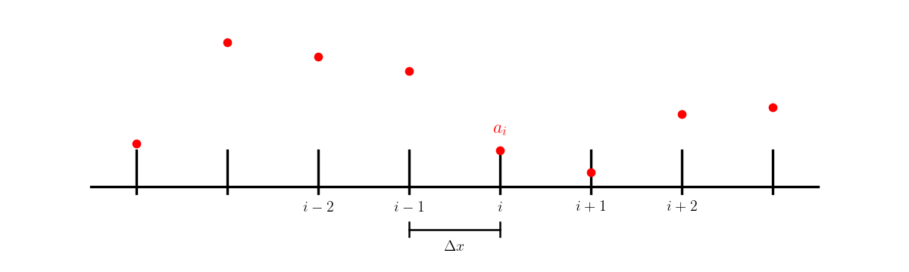

Linear Advection Equation#
The equations of hydrodynamics are a system of nonlinear partial differential equations that involve advection of mass, momentum, and energy. To get a feel for the solution of these equations, we will start with the simple linear advection equation.
This requires initial conditions, \(a(x, t=0)\), and a boundary condition. The solution to this is easy to write down:
any initial profile \(a(\xi)\) is simply advected to the right (for \(u > 0\)) at a velocity \(u\).
Representing Data#
The process of turning a continuous function, \(a(x)\) into a finite number of values that can be stored on a computer is called discretization.
We’ll divide our domain into a grid and store the function value at each point in our grid:

and we use the notation \(a_i^n = a(x_i,t^n)\) to represent the discrete data in space and time.
A First Attempt#
We might try to build on what we have already learned:
a centered difference for \(a_x\) is second-order accurate, so that should be desirable for discretizing the spatial terms
we can do a simple explicit Euler method to update the solution in time.
This would look like:
Note
This is an explicit update (the righthand side depends only on the information at the old time—stuff we know). As this is first order in time and second order in space, this method is called FTCS (for forward-time centered space).
We can rewrite this as:
where we introduce the Courant number, \(C\):
(this is also called the Courant–Friedrichs–Lewy or CFL number). \(C\) is dimensionless and is a measure of what fraction of a zone we cross per timestep.
Now imagine that our grid has N points, numbered 0, 1, … N-1. When we do the update for a[0], the equation above says we need information from zone a[-1]—this is outside our domain. To accommodate this, and allow us to use the same equation to update all zones, we extend the domain past the boundary, creating ghost points:

The ghost points are used to implement boundary conditions. For instance, if we are periodic, then that means that \(a_0^n = a_{N-1}^n\), so we would set:
Test problem#
To test our solver, we would like a problem with a known solution at any future point in time. For advection, this is easy, since the advection equation preserves any initial function and just moves it to the right (for \(u > 0\)) at a velocity \(u\).
Therefore, we can use periodic boundary conditions on a domain \([0, 1]\) and advect for a time \(1/u\), one period, and we should get back exactly what we started with.
Grid class#
To start, let’s make a class that controls our grid and holds our data, and knows how to fill our periodic boundary conditions. Python arrays begin at 0, so to make life easier, we will define ilo and ihi to
point to the first and last point in the domain (not including ghost points).

import numpy as np
import matplotlib.pyplot as plt
class FDGrid:
"""a finite-difference grid"""
def __init__(self, nx, ng=1, xmin=0.0, xmax=1.0):
"""create a grid with nx points, ng ghost points (on each end)
that runs from [xmin, xmax]"""
self.xmin = xmin
self.xmax = xmax
self.ng = ng
self.nx = nx
# python is zero-based. Make easy integers to know where the
# real data lives
self.ilo = ng
self.ihi = ng+nx-1
# physical coords
self.dx = (xmax - xmin)/(nx-1)
self.x = xmin + (np.arange(nx+2*ng)-ng)*self.dx
# storage for the solution
self.a = self.scratch_array()
self.ainit = self.scratch_array()
def scratch_array(self):
""" return a scratch array dimensioned for our grid """
return np.zeros((self.nx+2*self.ng), dtype=np.float64)
def fill_BCs(self):
""" fill the a single ghostcell with periodic boundary conditions """
self.a[self.ilo-1] = self.a[self.ihi-1]
self.a[self.ihi+1] = self.a[self.ilo+1]
def plot(self):
fig = plt.figure()
ax = fig.add_subplot(111)
ax.plot(self.x[self.ilo:self.ihi+1], self.ainit[self.ilo:self.ihi+1],
label="initial conditions")
ax.plot(self.x[self.ilo:self.ihi+1], self.a[self.ilo:self.ihi+1])
ax.legend()
return fig
FTCS#
Now we can write our solver. It will create the grid object, initialize the data (by calling a function we pass in) and then advance the solution using FTCS.
We will specific the Courant number, \(C\), and use that to get the timestep, \(\Delta t\). As we will see shortly, the Courant number is an important parameter for numerical methods for advection, so making it the primary input makes sense.
def ftcs_advection(nx, u, C, num_periods=1.0, init_cond=None):
"""solve the linear advection equation using FTCS. You are required
to pass in a function f(g), where g is a FDGrid object that sets up
the initial conditions"""
g = FDGrid(nx)
# time info
dt = C*g.dx/u
t = 0.0
tmax = num_periods*(g.xmax - g.xmin)/np.abs(u)
# initialize the data
init_cond(g)
g.ainit[:] = g.a[:]
# evolution loop
anew = g.scratch_array()
while t < tmax:
if t + dt > tmax:
dt = tmax - t
C = u*dt/g.dx
# fill the boundary conditions
g.fill_BCs()
# loop over zones: note since we are periodic and both endpoints
# are on the computational domain boundary, we don't have to
# update both g.ilo and g.ihi -- we could set them equal instead.
# But this is more general
for i in range(g.ilo, g.ihi+1):
anew[i] = g.a[i] - 0.5*C*(g.a[i+1] - g.a[i-1])
# store the updated solution
g.a[:] = anew[:]
t += dt
return g
Now we need a function to initialize the state. We’ll do a tophat
def tophat(g):
g.a[:] = 0.0
g.a[np.logical_and(g.x >= 1./3, g.x <= 2./3.)] = 1.0
Let’s try this out
nx = 64
u = 1.0
C = 0.5
g = ftcs_advection(nx, u, C, init_cond=tophat)
fig = g.plot()
That looks really bad! Remember, if we did well, then the solution after one period should look just like the initial conditions!
We know that our difference approximations should be more accurate for smaller \(\Delta t\) and smaller \(\Delta x\). Reducing \(\Delta t\) is equivalent to picking a smaller value of \(C\). So let’s try that.
C = 0.1
g = ftcs_advection(nx, u, C, init_cond=tophat)
fig = g.plot()
That’s still really bad. Let’s try evolving for less time:
g = ftcs_advection(nx, u, C, init_cond=tophat, num_periods=0.1)
fig = g.plot()

That shows that something is happening near the discontinuities. Maybe we need more resolution?
nx = 256
g = ftcs_advection(nx, u, C, init_cond=tophat, num_periods=0.1)
fig = g.plot()
Stability#
The issue is that the FTCS method is unstable. There are different ways that we can analyze this. We’ll do a truncation analysis.
Let’s start with our discrete equation:
consider the Taylor expansions in space and time:
we can replace the \(a_{tt}\) time derivatives in the latter expansion with the analytic equation:
and we have:
Now substituting these into our original discrete equation:
or simplifying:
The left side looks like our original linear advection equation, and the truncation error shows that this is first-order accurate in time.
But when we keep some of the terms in our Taylor expansion, we see that our discrete equation more properly represents an advection equation with a term proportional to \(a_{xx}\) on the righthand side. This looks like a diffusion term.
Caution
The action of diffusion is to take a peaked distribution and smear it out over time. But our diffusion term has a negative coefficient, so it is more like antidiffusion. This is unphysical. And there is no value of \(\Delta t\) that makes the diffusion positive, therefore this system is always unstable.